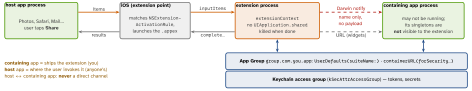

ios-platform · folio
In one line: An extension is a .appex inside the containing app,
launched by the system for a host app in its own process — own
sandbox, bundle id, entitlements, a far smaller memory limit. It shares no
memory with its app: they meet only in an App Group, a Keychain
access group, or through the system.
Download PDF Print view LaTeX source


Extension points (common)
| Share / Action | share sheet in any app; Action can hand back modified items |
| Widget | WidgetKit timeline, archived views, no live process |
| Notif. Service | mutable-content: 1 push, ≈30 s to edit/decrypt/attach, no UI |
| Notif. Content | custom VC for an expanded notification, per category |
| Keyboard | not used for secure/phone-pad fields; no network or App Group without Full Access |
| App Intents / Intents | Siri, Shortcuts, Spotlight actions |
| File Provider | a cloud drive inside the Files app |
| Network Ext. | VPN packet tunnel, content filter, DNS proxy; special entitlement |
| also | Safari web ext., Photo Editing, iMessage, Call Directory, Broadcast Upload |
How it works
- A separate target: bundle id under the app’s (
com.you.app.share), its own profile and entitlements. Info.plistNSExtension→NSExtensionPointIdentifier,NSExtensionPrincipalClassor…MainStoryboard,NSExtensionAttributes. NSExtensionContext:inputItems→NSExtensionItem.attachments→NSItemProvider(hasItemConforming…, asyncloadItem); finish withcompleteRequest(returningItems:)orcancelRequest(withError:).- Lifetime is the system’s: launched on demand, killed soon after completing. API limits:
UIApplication.sharedis marked unavailable; a shared framework sets “Allow app extension API only” so misuse fails at build time.extensionContext.open(_:)is honoured only by some points — a share extension cannot open its app; widgets usewidgetURL/Link. - Memory ceilings: per point, undocumented, far below an app’s — widgets and NSEs are famously tight. Downsample, don’t cache.
- Shared data: App Group entitlement on both targets; files or a SQLite/Core Data store in
containerURL, writes throughNSFileCoordinator; the app nudges widgets withWidgetCenter.shared.reloadTimelines(ofKind:). - Long upload: background
URLSession+sharedContainerIdentifier= the group; events go to the containing app (handleEventsForBackgroundURLSession). - Debug: run the extension scheme, pick a host app (Xcode attaches when invoked) or Attach to Process by Name; log with
Logger+ Console.app; the memory gauge shows the extension’s own limit.
Example — share extension → its app
final class ShareVC: UIViewController {
override func viewDidLoad() { super.viewDidLoad(); Task {
let ctx = extensionContext!, id = UTType.url.identifier
let item = ctx.inputItems.first as? NSExtensionItem
guard let p = item?.attachments?.first(where: {
$0.hasItemConformingToTypeIdentifier(id) }),
let url = try? await p.loadItem(
forTypeIdentifier: id, options: nil) as? URL
else { return ctx.cancelRequest(
withError: CocoaError(.fileReadUnknown)) }
let shared = UserDefaults(suiteName: "group.com.you.app")
shared?.set(url.absoluteString, forKey: "pendingURL")
ctx.completeRequest(returningItems: nil) // may die now
} } }Traps
UserDefaults.standardin app + widget → two different files. Use the suite, entitlement on both targets.- Singletons and caches are per process: after the extension writes, the app’s cache is stale — reload on foreground or on a Darwin notification.
URLSession.sharedthencompleteRequest— the process is killed mid-request. Use a background session.- Shared SQLite: a suspended process holding its file lock is killed (
0xdead10cc); coordinate writers. NSExtensionActivationRule=TRUEPREDICATEis for development only — App Review rejects it.
Remember
Own process · own sandbox · shared disk, never shared memory.
Which channel for what
| app → widget | write the App Group store, reloadTimelines(ofKind:) |
| login token | Keychain access group (an App Group id works too) |
| big upload | background session, sharedContainerIdentifier |
| “I wrote” | Darwin notification (name only) → read the group store |
| open the app | widgets: widgetURL / Link; share ext.: no |
NSExtensionPointIdentifier
| Share · Action | com.apple.share-services · com.apple.ui-services |
| Widget | com.apple.widgetkit-extension |
| Notif. Service | com.apple.usernotifications.service |
| Notif. Content | com.apple.usernotifications.content-extension |
| Keyboard | com.apple.keyboard-service |
| File Provider | com.apple.fileprovider-nonui |
| Photo Editing | com.apple.photo-editing |